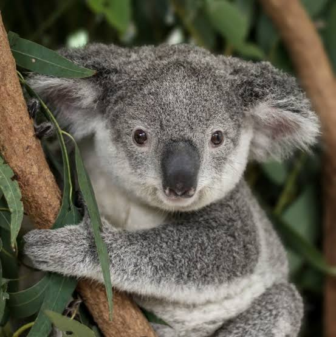

Koalas are often called "koala bears," but they are actually marsupials, not bears. These tree-dwelling animals are native to Australia and are closely related to wombats and kangaroos . They are famous for their fluffy ears, large black noses, and sleepy nature, spending up to 18 to 22 hours a day sleeping in the forks of eucalyptus trees.
Their diet is very specialized, consisting almost entirely of eucalyptus leaves, which are tough and toxic to most animals . Koalas have a unique digestive system that neutralizes the toxins, but the leaves provide so little energy that the animals must conserve energy by sleeping constantly . They rarely drink water because they get most of their moisture from the leaves, and they even store leaves in their cheek pouches for later snacking.
Baby koalas, called joeys, are born tiny and underdeveloped, and they immediately crawl into their mother's pouch to continue growing for about six months . After leaving the pouch, the joey rides on its mother's back for several more months, learning which leaves to eat . Unfortunately, koalas face serious threats from habitat loss, bushfires, and disease, and they are listed as vulnerable or endangered in many parts of Australia .